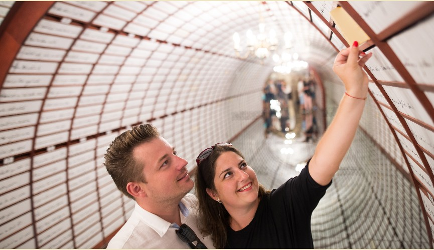
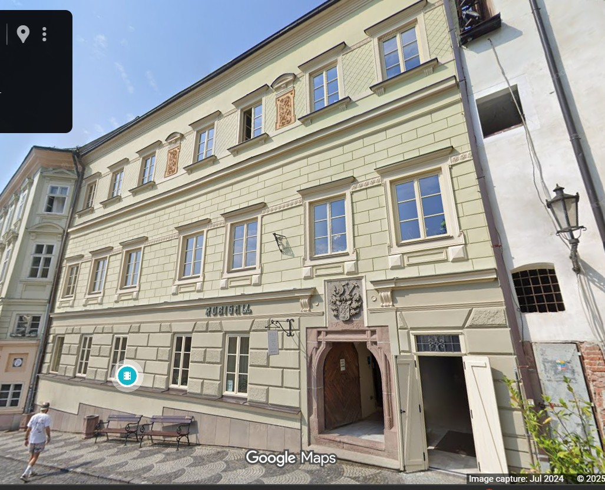

Miután magatok mögött hagyjátok az Újvár fehér falait, lefelé indultok a temető és a parkoló mellett. A hegyoldal lassan kinyílik, a házak sűrűsödnek, és lépésről lépésre közelebb kerültök Selmecbánya igazi szívéhez. Ez az út nem csak egy séta a várból a főtér felé, hanem mintha egy idővonalon haladnátok végig: erődből kapun át a bányászok hajnalába, onnan a város tanácsaihoz, a polgárok templomához, végül a szerelem és a Szentháromság központi teréig.
Mielőtt lejjebb lépnétek, érdemes egy pillanatra megállni és felnézni a távolban magasodó Kálváriára. A hegy oldalában három templom és kápolnák sora kapaszkodik felfelé, mint egy hosszú imádság, amely a város fölött lebeg. A 18. század közepén épült, és a térség egyik legjelentősebb barokk kálváriájaként tartják számon.
A stációk Krisztus szenvedéstörténetét járják végig, miközben a zarándok egyre magasabbról néz vissza a kráter alakú hegykoszorú ölelésében fekvő városra. Innen, lentről nézve is érteni lehet, miért gondolták az egykori bányászok úgy, hogy Selmecbányát nem csak erődök, hanem imádságok is védik.
Ahogy lejjebb értek a hegyről, egy régi kapu maradványa fogad: ez a városkapu, Selmecbánya egykori falrendszerének fontos része. A 16. században erősítették meg, amikor a török támadások egyre nagyobb fenyegetést jelentettek, és a bányavárost kőből rakott pajzsként vették körül a falak.
A kapun át haladtak be a teherrel érkező szekerek, a kereskedők, a diákok és a bányászfalvakból érkező munkások. Ma már inkább csak emlékeztet arra, hogy aki itt belép, nem egy átlagos kisváros utcáira érkezik, hanem egy olyan helyre, ahol az arany és ezüst egyszer egész Európa történetét mozgatta.
Tovább sétálva eléritek a Kopogtató házat, vagy ahogy a helyiek emlegetik, a Klopačka tornyot. Első pillantásra kedves, régi ház, ma teázó, de a múltja sokkal keményebb: itt szó szerint „lekopogták” a bányászok napját.
A 17. században a felső szinten egy nagy fából készült kopogtatószerkezet működött. Hajnal előtt, nagyjából fél három körül jellegzetes kopogás jelezte, hogy indul a műszak, ideje lemenni a föld alá. Más ritmusok külön figyelmeztetéseket jelentettek: tűzvész, bányaszerencsétlenség, ellenséges veszély vagy temetés. A bányászok élete szó szerint ehhez a hanghoz igazodott.
Kevesen tudják, hogy az alsó szinten valaha a rendbontó bányászok „mini börtöne” is volt. Ma már csak a csésze tea koppan a csészealjon, de ha csendben figyeltek, szinte hallani lehet a régi kopogtatás visszhangját a falakban.
A séta következő állomása a Városháza. Az épület középkori magja a 14. századig nyúlik vissza, mai barokk formáját a 18. századi átépítések során nyerte el. Falai között évszázadokon át itt hozták a döntéseket bányajogról, kereskedelemről, adókról és a város mindennapi életéről.
A legtöbb látogatónak azonban azonnal az tűnik fel, hogy a torony órája „furcsán” működik: a nagy mutató az órát, a kicsi a perceket mutatja. Egy magyarázat szerint a hegyoldalról, messziről néző bányászok és polgárok számára az volt a lényeg, hogy nagy vonalakban tudják, hány óra van, a percek csak másodlagosak voltak – ezért lett nagyobb az óramutató.
Egy másik, játékosabb legenda úgy tartja, hogy a városba érkező kereskedőket akarták ezzel kissé megtréfálni, akik nem lelkesedtek a költségek állásáért. Ha igaz, ha nem, a történet jól illik Selmecbányához: itt az időt is kicsit másképp mérték, mint máshol.
A Városháza mellett emelkedik Selmecbánya késő gótikus Szent Katalin temploma, a 15. század végének városi „polgártemplom” hangulatával. A legérdekesebb benne nem csak a forma, hanem a szerepe is: a 17. századtól a város „nem német” ajkú lakossága, szlovákok és magyarok is itt talált lelki otthonra, ezért sokan a polgárok templomának nevezték.
Túraterv megjegyzés: Ez egy rövid megállós pont, kívülről is erős, de igazán akkor működik, ha pár percet hagysz arra, hogy „összeálljon” a kép, hogyan lett egy bányászváros jelképévé egy vitázó, tudós nő szentje.
Ahogy továbbmentek, elérkeztek a Love Bankhoz, a Marína házhoz. Ez egy különleges, modern múzeum, amely Andrej Sládkovič „Marína” című versére épül, amelyet a világ leghosszabb szerelmes versének tartanak.
A Love Bank lényege a Szerelem trezorja. A vers minden betűjéhez, szóközéhez és írásjeléhez tartozik egy kicsi „Love Box” – apró trezor, amelyet párok, családok, barátok választhatnak maguknak. Ezekben a kis rekeszekben saját emlékeiket, leveleiket, apró tárgyaikat tárolhatják akár évtizedekre. Mintha egy bányavárosban nem csak drágaköveket, hanem érzelmeket is el lehetne raktározni a jövőnek.
A ház alatti pincéből egykor bányajáratok vezettek tovább a föld alá, akárcsak néhány szomszédos épület alól. Néhány éve tűzvész érte az épületet, de a Love Bank legfontosabb része, a szerelem trezorja megmaradt – a helyiek szerint ez is bizonyítja, hogy vannak dolgok, amelyek erősebbek a lángoknál.
Végül megérkeztek Selmecbánya szívébe, a Szentháromság térre. A 16. század óta ez a város fő tere, ahol a leggazdagabb bányavállalkozó családok palotái sorakoznak egymás mellett. A reneszánsz és barokk homlokzatok mögött egykori jogi viták, bányatársasági szerződések és persze kisebb-nagyobb családi történetek lapulnak.
A tér közepén áll a barokk Szentháromság-szobor, pestisoszlopként emelt fogadalmi emlék. Az 1710 körüli járvány után fogadták meg a város lakói, hogy ha túlélik a pusztítást, hálájuk jeléül monumentális emléket állítanak. A gazdagon faragott oszlop szentjei, angyalai és felhői úgy törnek az ég felé, mintha maga a város imádsága merevedett volna kővé.
 📍 Navigáció a Rubigall-házhozA téren álló paloták között találjuk a gazdag bányászcsaládok egykori házait is. Az egyik ilyen ház – a hagyomány szerint – a Rubigall családhoz köthető, akikről egy 16. századi történet beszél. Eszerint Balassi Bálint, a magyar reneszánsz költő egy közeli fürdőben csúnyán összeszólalkozott egy fiatal bányavállalkozó fiával. A vita annyira elfajult, hogy Balassi kézzel intézte el az ügyet, majd levelet írt az országgyűlésnek, hogy megvédje becsületét és elmagyarázza, mi vezetett a botrányhoz.
Későbbi rosszmájú mendemondák arról is suttogtak, hogy Balassi egy férjes asszonnyal is bonyolult történetbe keveredett, és a pletykák messze tovább gyűrűztek a Felvidéken. Ezeket már nehéz pontosan igazolni, de jól illenek egy olyan térhez, ahol a gazdagság, a hírnév és az emberi szenvedélyek folyamatosan egymásnak feszültek. Több ház alatt eredeti tárók és bányajáratok nyíltak, a tér így valójában egy föld alatti labirintus tetején áll.
És ezzel elértétek a következő állomást: a Szentháromság teret. Innen indul tovább a kincskeresés, a város kövei és történetei között.
Sokat írtam, de sosem gépen,
Lovon jártam, jegy se kéne.
Ha elszavalom a Nemzeti dalt,
Minden magyar talpra áll.
Ennek a fickónak a neve a kulcs
a 7. „A költő nyomában” ponthoz.